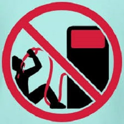

02/05/2017 Sufre dos amputaciones de su miembro el mismo día
Fan Lung no ha tenido suerte en la vida. Su mujer le amputó el pene tras una supuesta infidelidad y cuando él regresó del hospital, adonde fue trasladado de urgencia para reimplantárselo, ella, contrariada porque habían neutralizado su acción, se lo volvió a cortar nuevamente
Lung sufre stress postraumático severo y ya no quiere que se lo reimplanten más por miedo a nuevas represalias. "Estoy barajando la posibilidad de un cambio de sexo", aseguró. Más tarde Lung ha podido demostrar que no pecó de infidelidad en ningún momento. Su mujer, (ahora ex-mujer por obvias razones) ha declarado que "quizá hubo precipitación por mi parte, pero un mal día lo tiene cualquiera"
28/04/2017 Se emborracha bebiendo... gasolina!
Su curiosa a la par que peligrosa adicción le ha llevado incluso a atracar graneros y gasolineras en busca de combustible y hay incluso una orden judicial que le prohíbe acercarse a ellos
Bryan Taylor, británico de 36 años, ha cortado ya varias mangueras de surtidores de estaciones de servicio en su localidad para hacerse con carburante sin plomo, uno de sus preferidos. Los vecinos comentan que "va como una moto". Aparte de ser una práctica altamente perjudicial para su salud, Taylor es un auténtico peligro público puesto que tras cada repostaje sufre efectos muy superiores a la intoxicación etílica convencional y se pone a bailar en medio de la carretera

25/04/2017 Atraca un banco a punta de pistola y no se lleva nada
Un vecino de Austin, TX ha mantenido en vilo a la población local al perpetrar un atraco a una sucursal bancaria y retener a varios clientes y empleados como rehenes a punta de pistola
Lo insólito del caso es que no solicitó acceso en ningún momento a la caja fuerte del banco ni pidió dinero alguno. El individuo se sentó a esperar que llegasen las fuerzas del orden. Cuando la policía llegó se abrazó a los agentes como si le hubieran salvado la vida. Y cuando la policía le interrogó sobre el motivo de su conducta declaró: "Quiero que me encierren, cualquier cosa antes que volver a casa con la bruja de mi mujer"